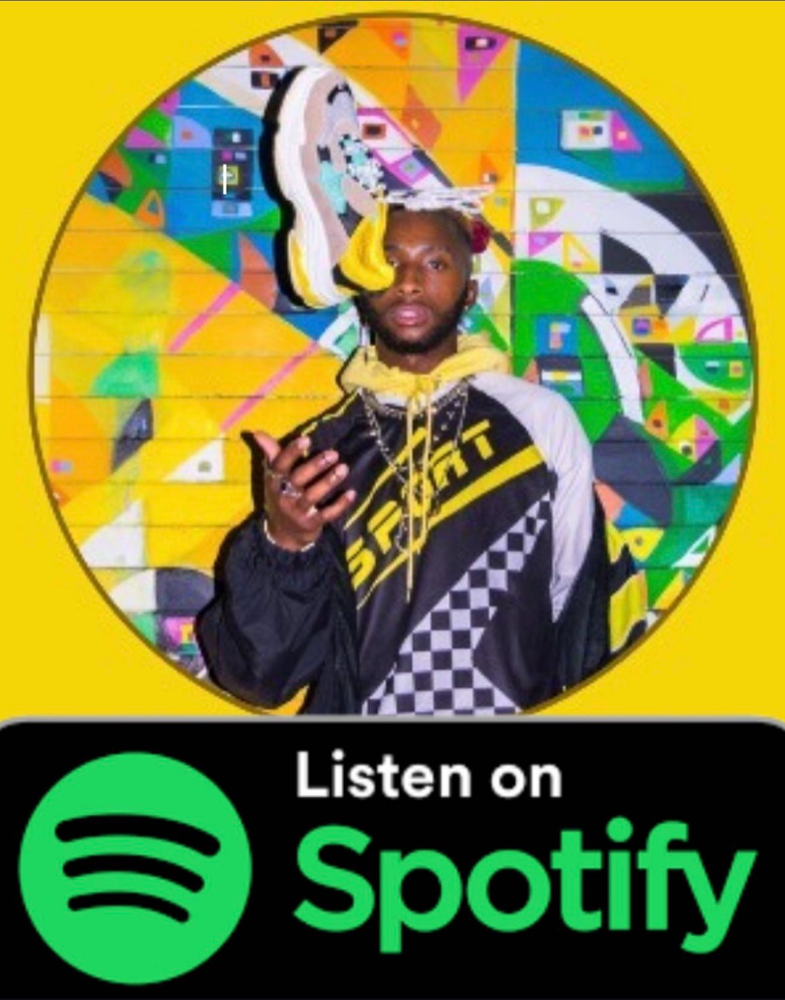
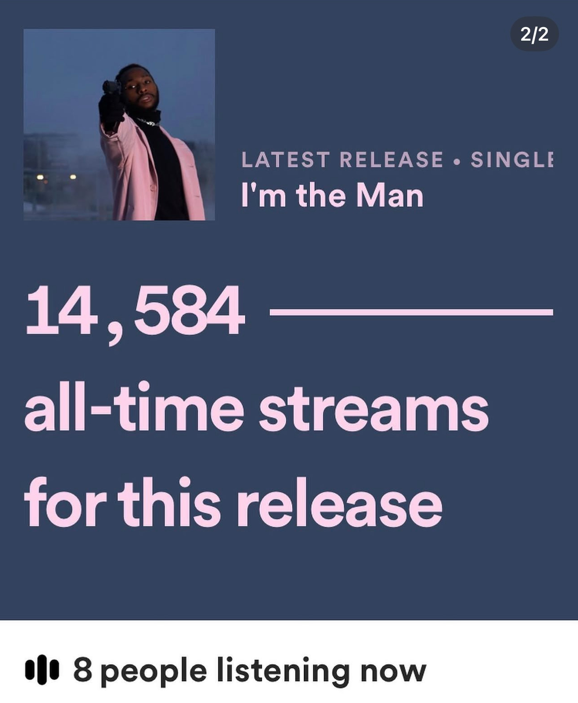
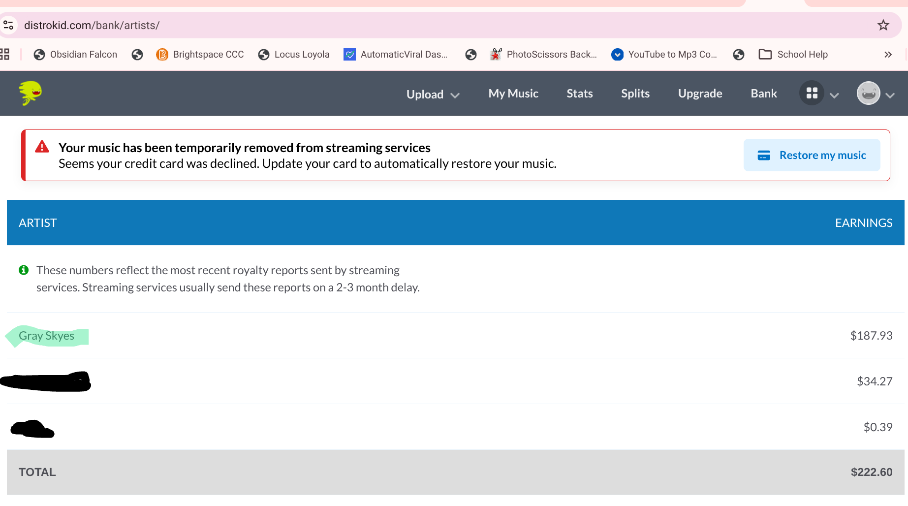

This was never an overnight build or a passing thought. I have had this plan in my mind for a long time. Artists deserve better. We deserve a nexus.
The receipts are not a flex. They are the reason.
One of my songs, I'm The Man, hit 14,584 all-time streams on Spotify. I still have the proof screenshot showing 8 people listening at once. That is not imaginary engagement. That is real people pressing play.
I also have the DistroKid bank proof. My music was temporarily removed after I stopped paying for the yearly service, and the bank page showed $222.60 total across the rows, with Gray Skyes at $187.93. That is after years of grind, production, equipment, collabs, splits, uploads, hope, and trying to make the normal system make sense.



The old math is disrespectful.
I have been the artist doing the whole run: buying beats, writing, recording, mixing, posting, paying distribution, watching streams move, and then checking the money like, "Are you fucking serious?" A beat can be $120 by itself. Equipment is not free. Time is not free. Content is not free. The mental energy it takes to keep pushing while the money trickles in at less than a penny per stream is not free.
I still have two collabs out there. One split was around 25 percent and another was around 13 percent. After years of streaming, I had only made around a couple hundred dollars before pulling most of my music and stopping the annual distribution payment. Since my hiatus, a tiny balance can sit there, but if I have to pay around $30 a year just to keep the machine running, the math turns insulting fast.
That does not mean streaming attention has no value. It means the artist cannot let attention die inside somebody else's dashboard. Streams should feed something the artist owns: a fan list, a release page, a merch offer, a live booking pitch, a content engine, a membership, a direct inbox, a business relationship, a story.
The Nexus starts with our own cleared catalog.
I am not opening SkyeMusicNexus by chasing famous-catalog licensing as the foundation. That path is expensive, slow, approval-gated, and legally messy. The fastest clean route is the one we can own: artists upload or submit music they control, rights are attested, preview use is authorized, takedown contact is attached, and streams are tracked inside the platform.
The platform should feel big because there is room to grow, not because it is stuffed with unfair industry plugs and plants. Independent artists should not be drowned out by fake patterns before they even get a real chance. If an artist is working, posting, sending fans, building offers, and showing up, that effort should translate into a stronger lane for them.
Your first 37 plays should be useful data, not public embarrassment. Your first 214 plays should tell you which post, pitch, city, hook, or fan group is working. The Nexus protects the growth stage while still measuring the work.
How artists make money with the platform.
This is not a "upload once and get rich" fantasy. I do not believe in selling artists fake miracles. The money plan is work plus ownership plus clean conversion.
- Claim the artist lane. Build the profile, attach a real story, upload proof-ready visuals, and make the catalog feel alive.
- Release through a focused drop page. Every single, EP, or album should have a page with a play button, pitch, email capture, merch or service offer, and direct call to action.
- Turn streams into owned fans. A stream is attention. The next step is a follow, email, SMS opt-in, paid download, merch order, booking inquiry, or membership.
- Sell a bundle, not just a song. Offer the track, behind-the-scenes notes, lyric sheet, unreleased demo, private livestream, production breakdown, wallpapers, merch, or early access.
- Use the blog/site engine. The free agentic artist blog website gives the artist a home. The automated content engine can keep posting for $67/month when the artist wants the machine running without manual babysitting.
- Track the loop. Plays, listen seconds, completed plays, saves, leads, comments, and sales should all point back to what worked.
- Keep rights clean. Own the song, clear samples, document splits, and do not upload what you cannot legally use.
Copy-paste launch scripts.
These are meant to be used immediately. Change the bracketed parts, keep the energy honest, and send people somewhere you own.
My new song [SONG TITLE] is live on SkyeMusicNexus. This one is for everybody who ever felt like they had to build the room before anybody would give them space in it. Run it up, save it, drop a comment, and send it to one person who needs this sound today. [LINK]
Yo, I just dropped [SONG TITLE] on SkyeMusicNexus. You have actually supported my music before, so I wanted to send it to you direct instead of hoping an algorithm shows it to you. Can you play it once, tell me your favorite line, and send it to one person if it hits? [LINK]
Subject: Independent artist pitch: [ARTIST] - [SONG TITLE] Peace, my name is [ARTIST]. I just released [SONG TITLE], a [GENRE/MOOD] record about [ONE-SENTENCE STORY]. I am building through SkyeMusicNexus because I want my music connected to a real artist lane, not lost in a platform where early independent growth gets buried. Link: [LINK] Short bio: [BIO] Best contact: [EMAIL / PHONE] If the record fits your audience, I would appreciate a feature, playlist add, interview, or honest feedback.
Subject: Booking inquiry: [ARTIST] for [VENUE/EVENT] My name is [ARTIST]. I am an independent [GENRE] artist building an active fan lane through SkyeMusicNexus. I am looking to perform a [SET LENGTH] set for [DATE RANGE]. My sound fits [AUDIENCE / EVENT TYPE], and I can help promote with short-form video, email, and direct fan outreach. Music: [LINK] Performance clips: [LINK] Contact: [PHONE / EMAIL]
Appreciate you listening. If the song hit, I made a supporter bundle for people who want to help the next drop happen. It includes [BUNDLE ITEMS], and every order goes back into production, visuals, and promotion. Support here: [LINK]
Build a quick campaign from the swipe copy.
I also want the platform itself to help artists move. This little builder is the shape of that lane: enter the artist, name the campaign, describe the drop, and turn the story into copy that can become posts, DMs, ads, and follow-up.
Gray Skyes is building a Nexus because thousands of streams should mean more than payout dust. Tap into the release, join the lane, and help independent artists own the next move.
Social ad angles for the Nexus.
The advertising should make the promise clean: SkyeMusicNexus is a growth-first platform for artists who want room, ownership, and a fairer runway. Do not promise guaranteed income. Promise a better system, better tools, and a platform that does not punish the beginning.
Headline: A music platform with room to grow. Body: SkyeMusicNexus is for independent artists who are tired of getting buried before the work has a chance to breathe. Build your lane, track your plays, launch your drop, and turn attention into owned fans. CTA: Join the Nexus
Headline: Your first plays should not be used against you. Body: On SkyeMusicNexus, fan-facing play counts stay hidden until 1,000 plays. You still get the analytics. The public gets the music. Growth gets a fair runway. CTA: Start your artist lane
Headline: Built for artists who own the work. Body: Upload cleared music, build a real release page, capture fans, and connect your songs to offers that can actually support the next move. CTA: Build your catalog
Headline: Thousands of streams should mean more than pennies. Body: Gray Skyes built SkyeMusicNexus after living the independent artist grind: streams, listeners, proof, and still not enough money to match the work. The Nexus is the rebuild. CTA: See the artist playbook
Headline: Stop letting attention disappear. Body: A play is only the start. SkyeMusicNexus helps artists turn music into fan capture, launch pages, content, bundles, and real follow-up. CTA: Launch your next drop
The line I am drawing.
I am not building this because I hate music platforms. I am building this because I know exactly what it feels like to be an artist with proof and still feel broke by the math. I know what it is like to spend thousands, see people listening, and then stare at a payout that does not respect the work.
So this is the new rule in my world: the Nexus does not punish artists for being early. It helps them package the music, protect the proof, track the real activity, and convert attention into something they own. That is how we start changing the math.
Nah. Artists deserve better. We deserve a Nexus.
Swipe file version: copy-paste artist launch scripts and ad angles.